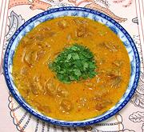

|
Chicken Coconut CurryBurma | ||||
| Serves: Effort: Sched: DoAhead: |
6 main *** 1-1/4 hrs Yes |
This curry is excellent served as a main dish with steamed rice, but is also used as a base for the Burmese noodle dish Nan Gyi Thoke (or Mouti Thoke). It also shows up as a dip for flat breads and other uses. | |||
|
2-1/2 ------- 1-1/2 1/2 2 ------- 1 5 1/4 14 1-1/2 1-1/2 1/2 ------- ar ------- ar |
# --- T t t --- # cl c oz T c t --- --- |
Chicken Meat (1) -- Marinade Paprika Turmeric Salt --------- Onion Garlic Oil Coconut Milk (2) Fish Sauce (3) Water Chili Powder (4) -- Garnish Cilantro Leaves -- Serve with Lime Wedges |
Prep - (30 min)
|